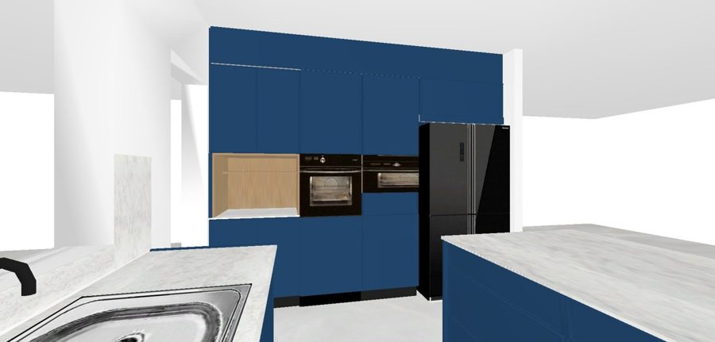
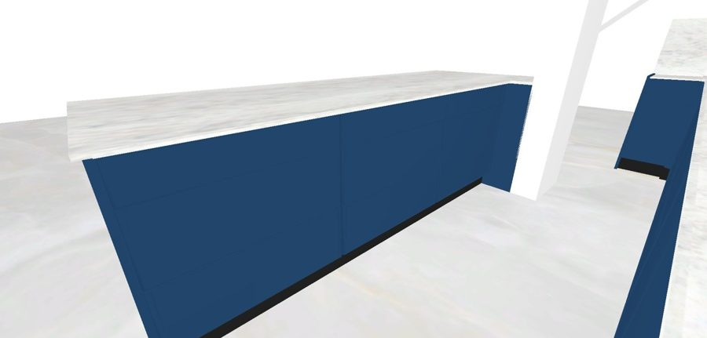
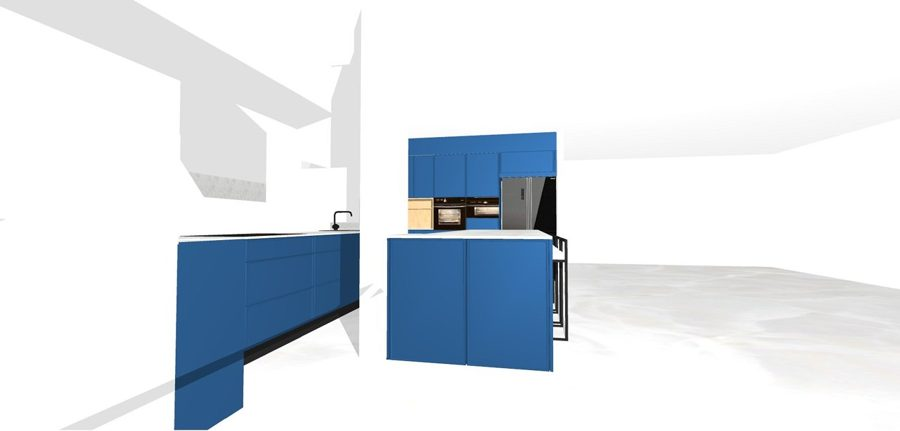

לפי תוכנית פורמג׳ו 10925 (12.8.26) ותכנון התכולה של יעל (6.10.26). גבהי המגירות בארון 9 נמדדו (15.5 / 24 / 22.5); את שאר המידות עוד לא מדדו. · שיבוץ הסלסלות בכל מגירה ←
תכנון של יעל (6.10)הצעה לאישור — לא הוגדר עדייןמכשיר / ללא אחסוןפתוח / לא נקבע
5ארון כיורמערכת מים + טוחן (אוורור בסוקל ובשוכם תחתון) · עגלת חומרי ניקיון
6מדיח אינטגרלי60 ס״מ
⬇️ אמצעיתהצעה: מחבתות עומדות
⬇️ אמצעיתהצעה: קופסאות אחסון ופלסטיק
⬇️ תחתונההצעה: סירים ומכסים
⬇️ תחתונההצעה: קערות ערבוב וכלים כבדים
✱ הצעה — בתכנון של יעל הסכו״ם נמצא בארון 7 (עליונה). הסכומון בארון 4 כלול כבר בהצעת המחיר — להחליט איפה סכו״ם ואיפה כלי בישול.
4 · האי והחצי־אי
#12 · 82
#11 · 85 (סכומון 85)
#10 · 82
⬇️ עליונההצעה: סכו״ם וקשיות ילדים, מפיות
⬇️ עליונה + סכומון (85)הצעה: סכו״ם הגשה ואירוח
⬇️ עליונההצעה: שקיות, נייר אפייה, נייר כסף
⬇️ אמצעיתהצעה: כוסות וספלים
⬇️ אמצעיתהצעה: קופסאות אוכל לבית הספר
⬇️ אמצעיתהצעה: מגבות מטבח וכלי ניקוי קטנים
⬇️ תחתונההצעה: קערות וצלחות עמוקות
⬇️ תחתונההצעה: מכשירים קטנים (טוסטר, מערבל)
⬇️ תחתונההצעה: דברים כבדים לשימוש נדיר
האי: 3 ארונות × 3 מגירות. גבו האי (#28, #29) — פאנלים לא נפתחים.
#13 · 54
#14 · 54
13חצי־אי — דלתהצעה: מכשירים קטנים (בלנדר, מיקסר) על מדףלפי ההדמיה: שתי דלתות (54 + 54), לא מגירות
14חצי־אי — דלתהצעה: דברים גדולים — פחים, מגשים, שקיותלפי ההדמיה: דלת עם מדף (פנים המדפים עוד לא נקבע)
5 · אימות מול ההדמיות (הדמייה 1 · 4 · 6)

הקיר הגבוה: נישת קפה פתוחה, תנור + מיקרוגל, מקרר

האי: 3 עמודות × 3 מגירות

החצי־אי: שתי דלתות גבוהות
מה אומתה / נתגלה בהדמיות: (1) האי — 3×3 מגירות ✓. (2) חצי־אי #13/#14 — דלתות ולא מגירות. (3) גב האי הוא פאנל חלק עם שרפרפי בר — אין אחסון ✓. (4) ארון 7: בהדמיה ובתוכנית כל שורה מחולקת לשתי חזיתות של 37.5 ס״מ, אבל בצילום ה־6.10 כל שורה נראית כמגירה רחבה אחת — לבדוק בפועל אם בארון 7 יש 3 מגירות רחבות או 6 צרות (≈32 נקי); זה משנה את שיבוץ הצלחות והסכו״ם.
מה מתוכנן ומה הצעה: התכולה של הקיר הגבוה (ארונות 7–9) היא התכנון של יעל מ־6.10; ארון 1 וארון 5 לפי הערות התוכנית. שאר הארונות והמגירות (2, 3, 4, האי והחצי־אי) הם הצעה בלבד, לפי מה שהיה במטבח הקודם (סירים, מחבתות, קופסאות, כוסות, מכשירים) — לאישור יעל.